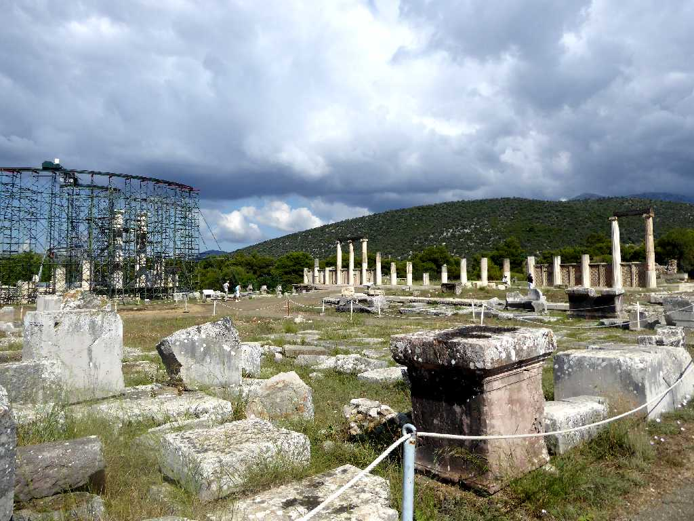
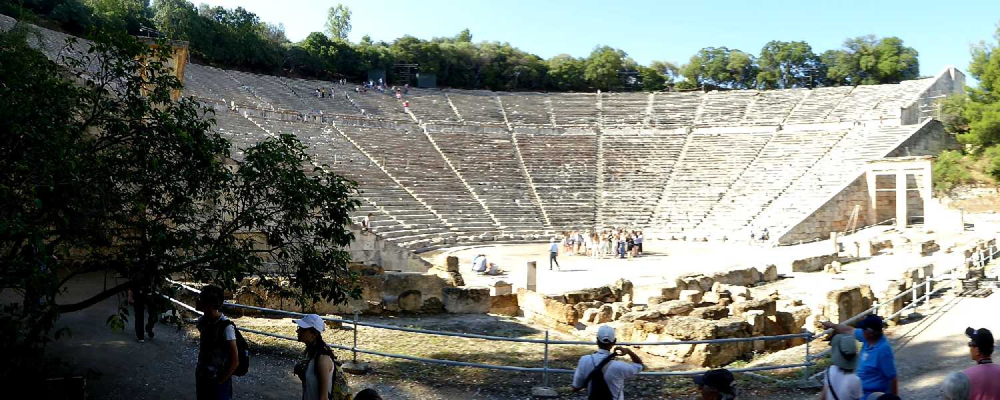
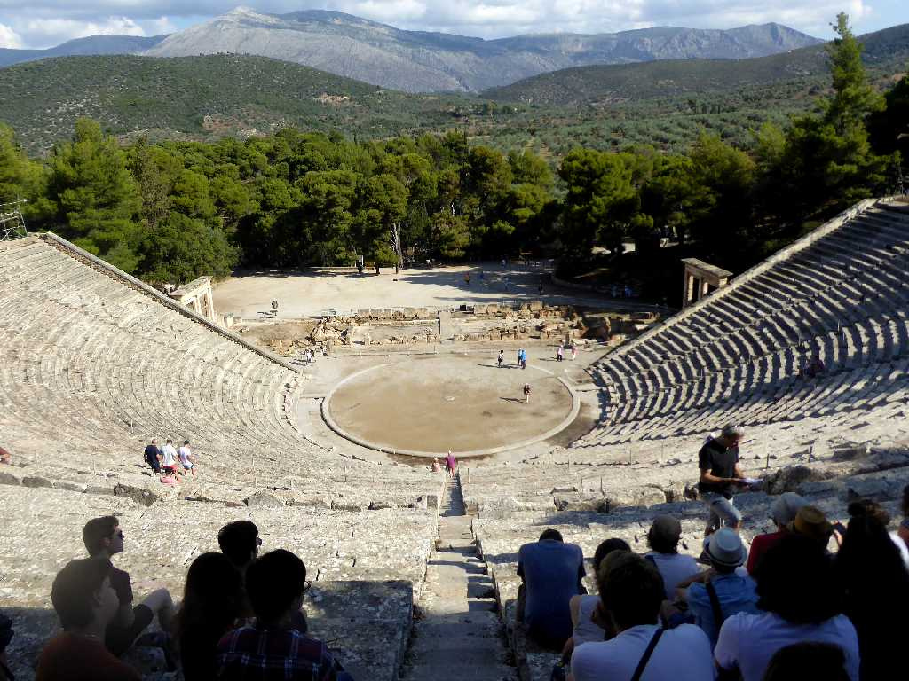
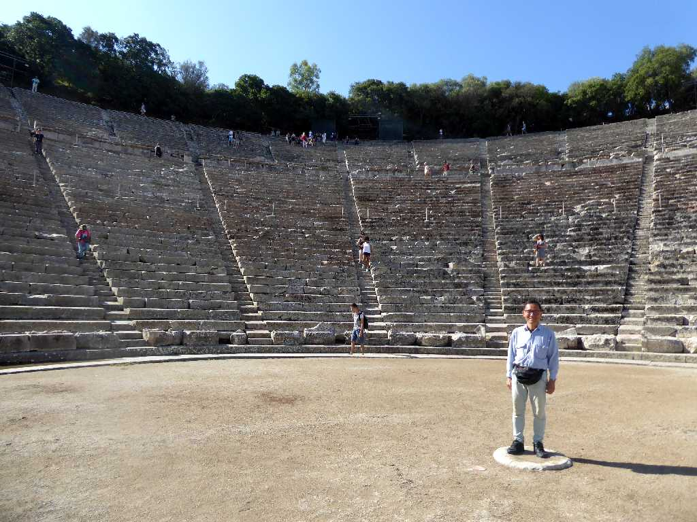

Epidaurus
太陽神アポロの息子で名医の神エピダウロスが生まれた聖域で複数の神殿や宿舎が創られ病人が癒される温泉施設なども併設され更に劇場やレストランなどもあり栄えた

Theater Epidaurus
紀元前３４０年に創られた非常に保存状態が良く音響効果も良い美しい円形劇場

Theater Epidaurus
１１４ｍ５５列１４,０００人程収容でき現在でも演劇やコンサートなどに現役で使用されている

June 18 2018 Theater Epidaurus
何と舞台でコインを落とした音が一番奥の席まで聞こえるそうです